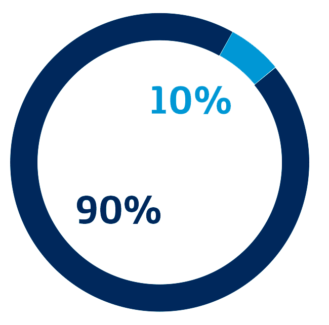
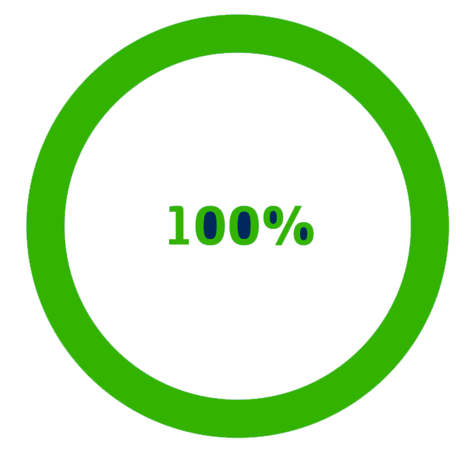
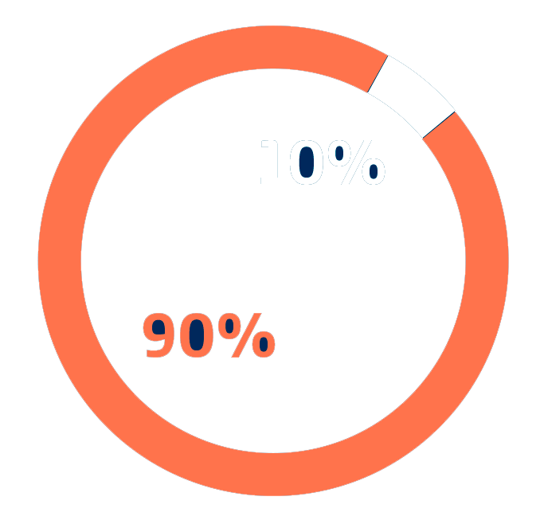

Informe Gestión Responsable 2020
Estructura de Gobernanza
(GRI 102 -18)
La Asamblea General de Accionistas, en su sesión ordinaria del 27 de marzo de 2014, aprobó el Código de Gobierno Corporativo, en virtud del cual se adquirió el compromiso con todos los grupos de interés de cumplir con los más altos estándares en gobierno corporativo. El Código incorpora: los Principios de Gobierno Corporativo de la OCDE, los Principios de Pacto Mundial, los Principios Empresariales para Contrarrestar el Soborno de Transparencia Internacional, y los principales estándares del Código País

Atención al Accionista
Canales de comunicación con
los accionistas
En cumplimiento de lo establecido en los numerales 2.5 y 5.2 del Código de Buen Gobierno Corporativo, se realizó un diálogo con los Accionistas y la publicación de dos ediciones semestrales del Boletín para el Accionista. A través de estos canales se comunicaron los principales resultados financieros a 30 de septiembre de 2020, y los operativos y de mercado a 30 de junio de 2020. Adicionalmente, se comunicaron otros asuntos como la redención del Bono Senior 2012 y del Bono Híbrido 2015 y los resultados de la emisión del Bono Senior 2020, la finalización del proceso de integración con Metrotel y Telebucaramanga a partir de la formalización de la fusión en mayo de 2020, los avances en el Plan de Negocio Responsable 2019-2021, las diversas acciones implementadas por la Compañía para cuidar de la salud de los colaboradores durante los meses de la declaratoria de emergencia sanitaria como consecuencia de la pandemia de la COVID-19, y los planes comerciales lanzados por la Compañía con la primera oferta de servicio móvil realmente ilimitada en el mercado colombiano.
Trato Equitativo
En las 4 reuniones de la Asamblea General de Accionistas de la Compañía celebradas durante el año 2020, los accionistas presentes pudieron ejercer su derecho político de participar en las deliberaciones y toma de decisiones del máximo órgano social. Las reuniones de la Asamblea se celebraron en estricto cumplimiento de los Estatutos Sociales, el Código de Bueno Gobierno Corporativo y la Ley.
Composición Directiva
- Region Nombre
- 1 Alfonso Gómez Palacio
- 2 Fabián Andrés Ramírez Hernández
- 3 Luis Ángel Prendes Arroyo
- 4 Diego Colchero Paetz
- 5 Martha Elena Ruiz Díaz-Granados
- 6 Pedro Alberto Ramón y Cajal Agüeras
- 7 Francisco Javier Azqueta Sánchez-Arjona
- 8 Javier Alexander Gutiérrez Rueda
- 9 Luis Guillermo Echeverri Vélez
- 10 Julio Andrés Torres García

Los perfiles de los miembros de la Junta Directiva se encuentran publicados en la página www.telefonica.co/junta-directiva.
Autoevaluación de la Junta Directiva
En cumplimiento de lo establecido en el Código de Buen Gobierno Corporativo, la Junta Directiva de la Compañía realizó su autoevaluación para el periodo comprendido entre el 1 de enero y el 31 de diciembre de 2020. Las autoevaluaciones fueron recibidas directamente por la Revisoría Fiscal, quien se encargó de remitir los resultados generales y de realizar la métrica de los mismos. La autoevaluación de la Junta Directiva será presentada y entregada a la Asamblea Ordinaria de Accionistas que se llevará a cabo en marzo de 2021, dentro del informe de cumplimiento de prácticas de Buen Gobierno Corporativo.
Participación por género
Participación por edad

Comité de Auditoría
El Comité de Auditoría se reunió en seis oportunidades en el transcurso del año 2020. El Comité veló porque la preparación, presentación y revelación de la información financiera se ajustará a lo dispuesto por la Ley. Los estados financieros fueron presentados a consideración del Comité de Auditoría antes de ser presentados a la Junta Directiva y a la Asamblea General de Accionistas. Además, supervisó el cumplimiento del programa de Auditoría Interna.
Composición Comité de Auditoría
- Nombre
- Alfonso Gómez Palacio
- Pedro Alberto Ramón y Cajal Agüeras
- Francisco Javier Azqueta Sánchez-Arjona
- Javier Alexander Gutiérrez Rueda
- Julio Andrés Torres García
Participación por género
Participación por edad
Conflictos de intereses
(GRI 102-25)
En desarrollo de los Principios de Negocio Responsable (Código de Ética) y la Política Anticorrupción, desde Telefónica Movistar se comunica de forma clara cuáles son los principios que guían las acciones hacia todos los grupos de interés, con el fin de ser una empresa en la que el cliente, el empleado, el proveedor, el accionista y la sociedad en general, puedan confiar. De esta forma, se busca construir relaciones transparentes y duraderas.
Los órganos de administración de la Compañía comparten el compromiso por la Integridad con todos los niveles organizativos. Los directivos, entre tanto, están obligados a involucrarse directamente en la promoción de todos aquellos comportamientos que reflejen una cultura avanzada de Cumplimiento, constituyendo un referente desde la posición que ocupan, e incorporando esa aspiración en los procesos organizacionales. El objetivo es alcanzar el más alto compromiso de todos los niveles de la Compañía.
En ese sentido, se cuenta con un
procedimiento de gestión de las
situaciones de posibles conflictos de
intereses, establecido en la Normativa
Interna de Conflictos de Interés. Para
la gestión de los reportes de conflictos. de intereses, la Compañía cuenta
con una herramienta informática
específica, que permite su accesibilidad,
control y seguimiento estructurado,
a través de un flujo de trabajo
automático (workflow).
Igualmente,
se cuenta con adecuadas políticas y
procedimientos, planes de formación,
comunicación y concienciación,
así como de un seguimiento en la
matriz de riesgos de Integridad y un
régimen de sanciones conforme a
las políticas del Grupo y conforme a
la legislación colombiana en materia
laboral, que aseguran la transparencia
en los procesos de la compañía.
Adicionalmente, la Compañía cuenta con
una Política relativa a la participación
de Directivos y Gerentes del Grupo
Telefónica en Consejos/Órganos de Administración de Compañías Externas,
que establece los lineamientos a seguir
para su participación en las mismas.
En lo referente a los miembros de
Junta Directiva, de acuerdo con las
normas de Gobierno Corporativo,
cuando se encuentren inmersos en un
conflicto de interés actuarán conforme
a los principios de independencia,
abstención y confidencialidad y
deberán comunicar cualquier situación
de conflicto que pudieran tener con
el interés de la sociedad. Así mismo,
en el Código de Buen Gobierno se
establece que, de conformidad con
la ley, los administradores deben
abstenerse de participar, por sí o por
interpuesta persona, en interés personal
o de terceros, en actos respecto de los
cuales exista conflicto de intereses.